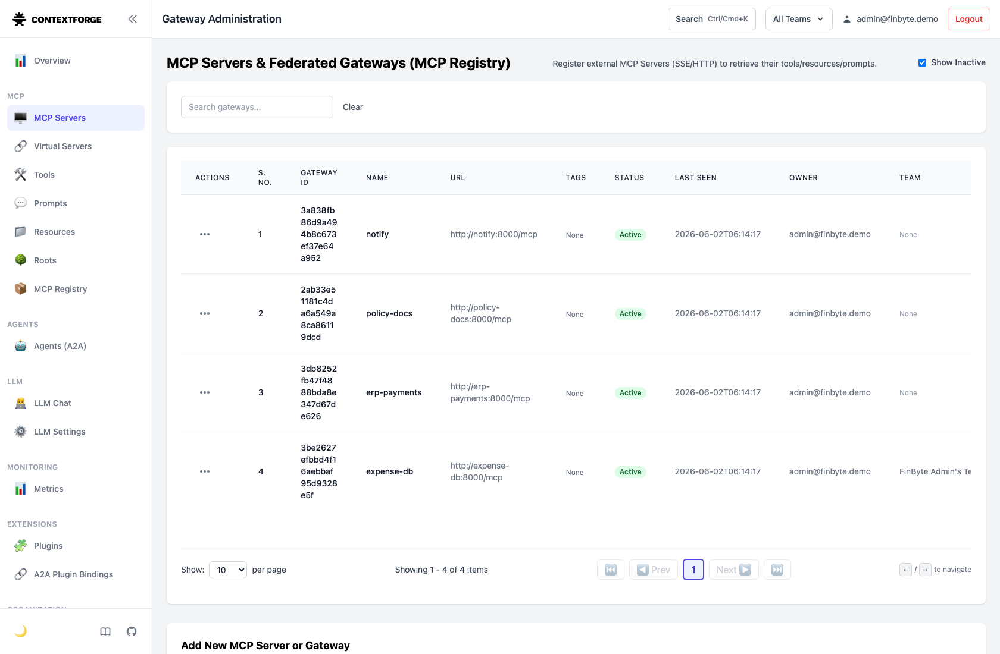
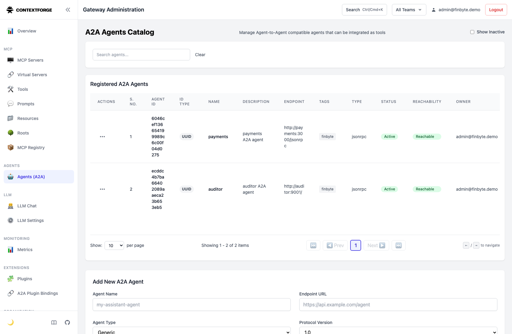
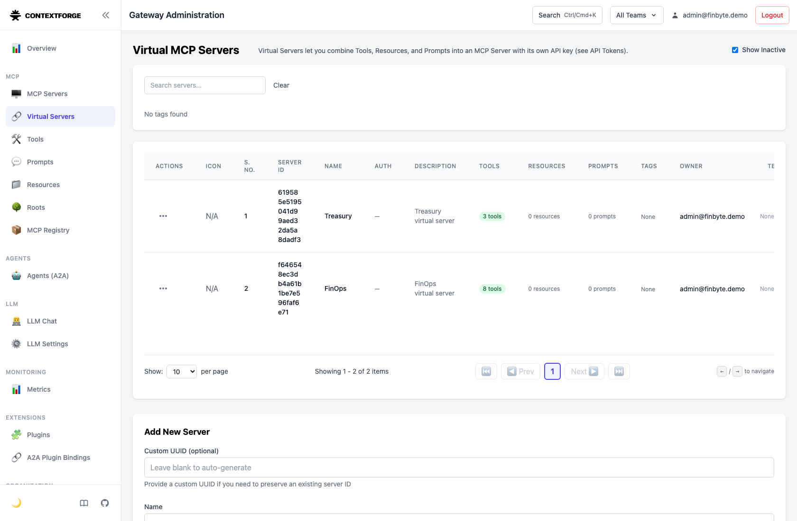
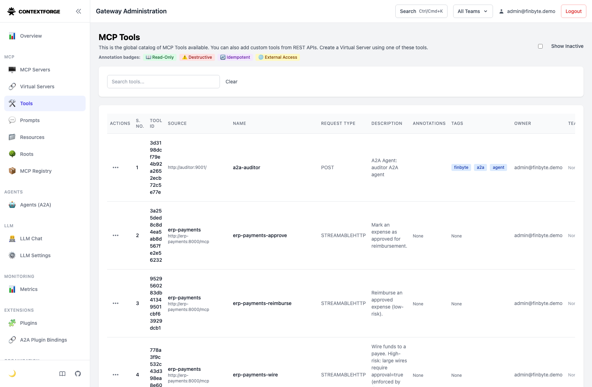
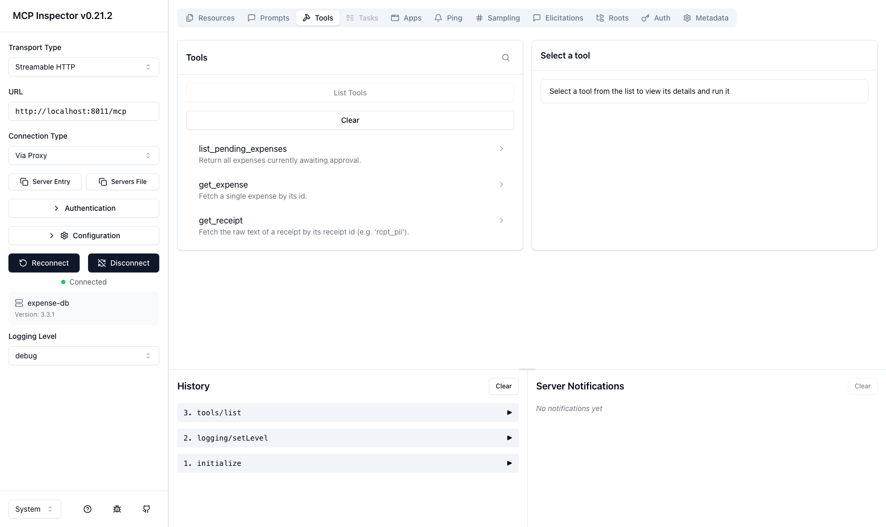
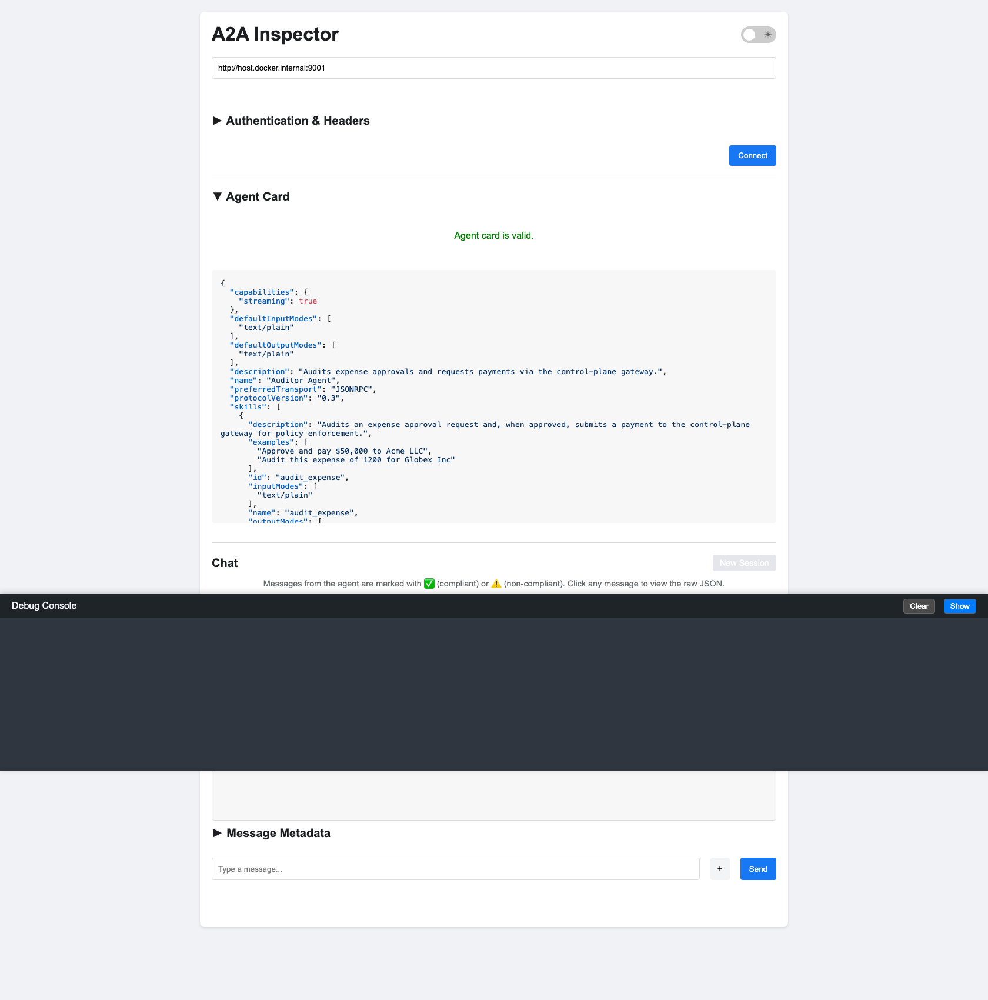
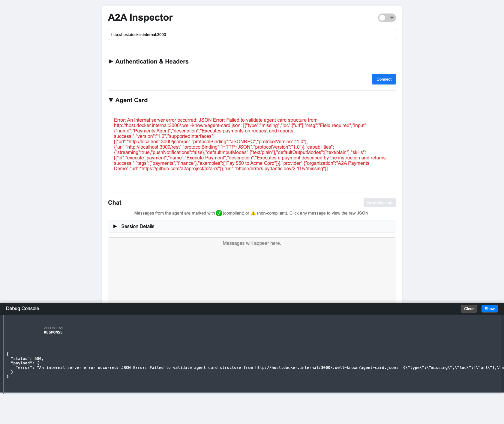
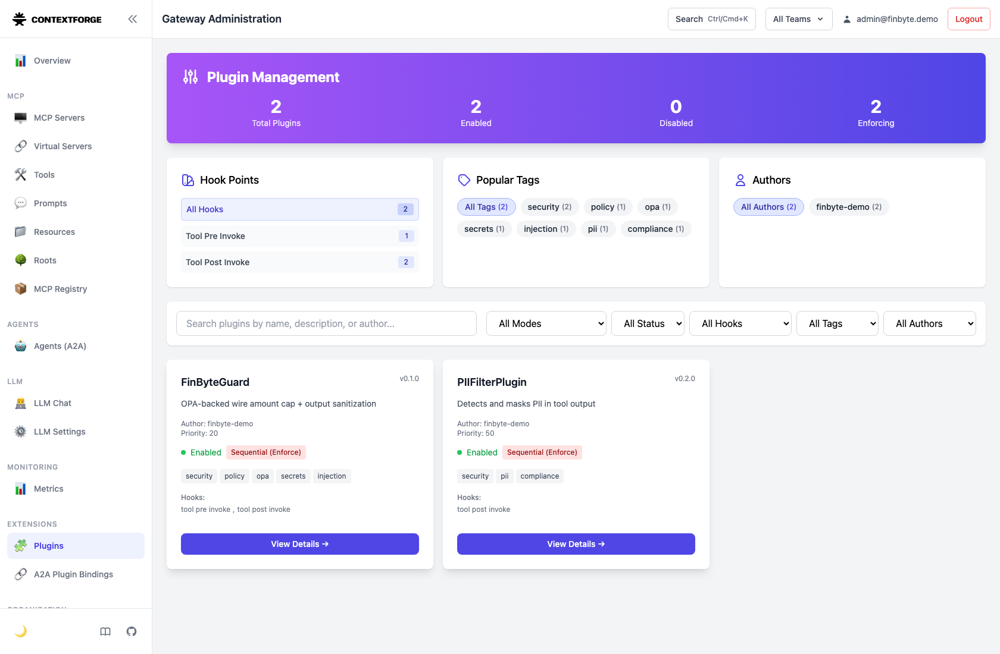

1ContextForge — MCP servers & A2A agents registered
Admin UI → MCP Servers: all four backends Active (notify, policy-docs, erp-payments, expense-db) with their /mcp URLs.

Admin UI → Agents (A2A): the Python Auditor and Rust Payments agents, registered and bridged as a2a_* tools.

Admin UI → Virtual Servers: FinOps (Bob's least-privilege view) and Treasury.

Admin UI → Tools: the unified catalog (server-prefixed tools + bridged a2a-*).

2MCP Inspector — servers verified
@modelcontextprotocol/inspector connected to expense-db over Streamable HTTP — Connected (v3.3.1), all 3 tools listed; request history initialize → tools/list.

Inspector CLI evidence (docs/screenshots/mcp-inspector-cli.txt):
(loading…)
3A2A Inspector — agents verified (a2aproject/a2a-inspector)
Left: Python Auditor — "Agent card is valid." Right: Rust Payments — card fetched + skills shown; the validator flags a missing top-level url (a2a-lf uses supported_interfaces per A2A v1.0, while the inspector's validator still requires the legacy url — a real cross-SDK nuance).


4ContextForge — policy / plugin configuration
Admin UI → Plugins: 2 enforcing. FinByteGuard (OPA-backed wire amount cap + output sanitization; tool pre+post hooks) and PIIFilterPlugin (mask SSN/card; tool post hook).

5Live companion + reproducible proof
Browser companion (make companion, :7070) — all six scenarios run live through the gateway: $50k BLOCKED, $5k/approved ALLOWED, PII REDACTED, injection NEUTRALIZED, cross-language A2A EXECUTED (Rust); sidebar shows FinOps hides wire.

| # | Control | Result |
|---|---|---|
| 1 | Policy (OPA) | $50k BLOCKED — "exceeds the $10,000 auto-approve limit … FinByte T&E policy §2" |
| 1b | Agent-mesh | $50k via a2a-payments BLOCKED at the tool hook |
| 2 | Data protection | SSN/card masked, key [SECRET_REDACTED] |
| 3 | Injection | [INJECTION_BLOCKED] |
| 4 | Least-privilege | FinOps hides the wire tool |
| ⇄ | Cross-language A2A | Rust agent "Payment executed" |
(loading…)